晶体化学指南
晶系理论篇
一、绪论：晶体的对称之美
自然界中许多固体物质以晶体的形式存在，其本质特征是内部原子（或离子、分子）在三维空间呈周期性重复排列，形成空间点阵（即布拉菲点阵）。这种内在的有序性，导致了晶体宏观形态上的千姿百态和对称性。
晶体学中，我们根据晶体的对称程度对其进行系统分类。最基本的划分单位是晶族，再往下细分为晶系，进一步则为晶类（32种晶体学点群）。本专题将聚焦于七大晶系，阐明其定义、特征对称元素及晶胞参数规律，并介绍与之对应的14种布拉菲点阵。
描述一个晶胞的几何形状只需六个参数：三个边的长度 a、b、c（轴长）以及它们之间的夹角 α、β、γ（轴角）。其中α是b和c的夹角，β是a和c的夹角，γ是a和b的夹角。七大晶系的根本差异，就体现在这些参数之间的约束关系上。
二、三个晶族（教学分类）
根据晶体中是否具有高次轴（轴次高于2的旋转轴，即3、4、6次轴）以及高次轴的数量，可将七大晶系归并为三个晶族，这是一种常见的教学分类法：
- 高级晶族：包含多个高次轴，其特征是必有4个三次轴（沿立方体体对角线方向）。仅有一个晶系——立方晶系（等轴晶系）。对称性最高。
- 中级晶族：只有一个高次轴（唯一主轴）。包含六方、四方、三方三个晶系。
- 低级晶族：无高次轴（无3、4、6次轴）。包含正交（斜方）、单斜、三斜三个晶系。
这一划分从宏观上反映了晶体对称性的高低，也与其物理性质（如光学各向异性）密切相关。
三、七大晶系详解
以下按照对称性从高到低的顺序，逐一介绍七大晶系。每个晶系都具有独特的特征对称元素，并由之决定了其晶胞参数的特定关系。
| 晶族 | 晶系 | 特征对称元素 | 晶胞参数特征 | 常见实例 |
|---|---|---|---|---|
| 高级 | 立方晶系 | 4个三次轴（或三次反轴） | a = b = c, α = β = γ = 90° | 岩盐、金刚石、明矾 |
| 中级 | 六方晶系 | 一个六次轴或六次反轴 (6) | a = b ≠ c, α = β = 90°, γ = 120° | 绿柱石、磷灰石、锌 |
| 四方晶系 | 一个四次轴或四次反轴 (4) | a = b ≠ c, α = β = γ = 90° | 金红石、锆石 | |
| 三方晶系 | 一个三次轴或三次反轴 (3) | 菱面体：a=b=c, α=β=γ≠90°；或六方坐标：a=b≠c, α=β=90°,γ=120° | 水晶（α-石英）、方解石、刚玉 | |
| 低级 | 正交晶系 | 三个互相垂直的二次轴，或两个互相垂直的对称面 | a ≠ b ≠ c, α = β = γ = 90° | 硫磺、橄榄石、碘 |
| 单斜晶系 | 一个二次轴或一个对称面 | a ≠ b ≠ c, α = γ = 90°, β ≠ 90° | 石膏、正长石、云母 | |
| 三斜晶系 | 仅可能具有反演中心（-1）或无其他对称元素 | a ≠ b ≠ c, α ≠ β ≠ γ 且通常不为90° | 微斜长石、蔷薇辉石、钠长石 |
3.1 立方晶系（等轴晶系）
对称性最高的晶系。特征是在立方体体对角线方向存在4个三次旋转轴（或三次反轴）。晶胞是一个标准的立方体，因此三个轴长相等，所有夹角均为90°。其点阵类型包括简单立方、体心立方和面心立方。属于立方晶系的矿物如岩盐（NaCl）、萤石、金刚石，常呈现出立方体、八面体或二者的聚形。

图 1：简单立方晶体结构。作者：Kizar / Wikimedia Commons (CC BY-SA 3.0)
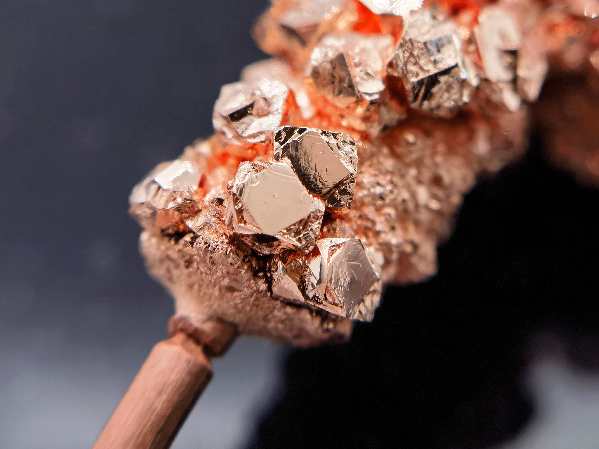
实例：铜晶体。作者：青于
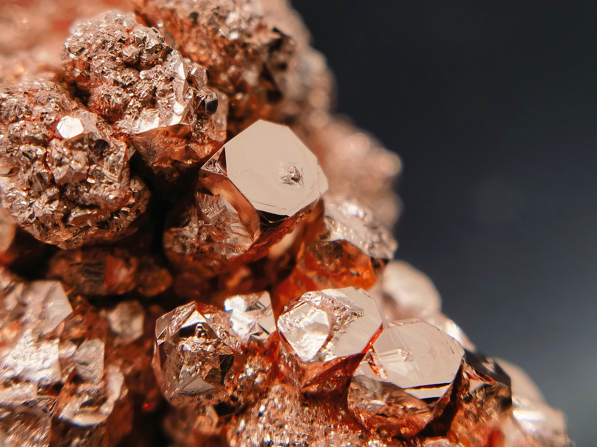
实例：铜晶体。作者：青于
3.2 六方晶系
具有唯一六次对称轴（6或6）。为了描述方便，晶体学中采用四个结晶轴：三个水平的a轴互成120°且共面，一个垂直的c轴。晶胞参数关系为a = b ≠ c, α = β = 90°, γ = 120°。典型的晶体如绿柱石、磷灰石，常呈六方柱或六方双锥的形态。注意：低温石英（水晶）不属于六方晶系，而归属于三方晶系。
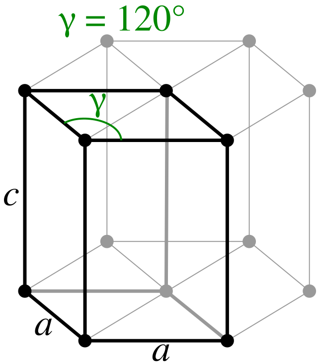
图 2：六方晶系宏观图。作者：Bor75 / Wikimedia Commons (CC BY-SA 3.0)
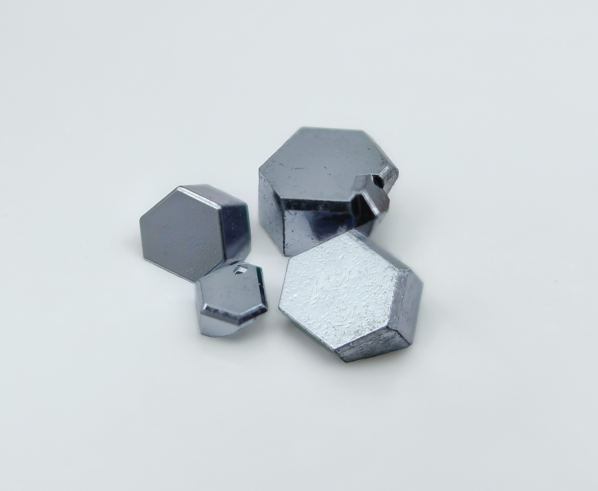
实例：锇晶体。作者：青于
3.3 四方晶系（正方晶系）
具有唯一四次对称轴（4或4）。三个结晶轴互相垂直，但水平方向的两个轴长度相等，垂直轴c不等长：a = b ≠ c, α = β = γ = 90°。代表矿物有金红石（TiO₂）、锆石。常见晶形为四方柱和四方双锥的聚形。
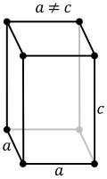
图 3：四方晶系宏观图。作者：Stannered / Wikimedia Commons (CC BY-SA 3.0)
3.4 三方晶系
具有唯一三次对称轴（3或3）。三方晶系在描述上较为特殊，它有两种晶胞选取方式：
- 菱面体晶胞：a = b = c, α = β = γ ≠ 90°（典型值在60°～120°之间，例如方解石α≈101°）。
- 六方晶胞：为方便与六方晶系对比，常取一个更大的六方晶胞，满足a = b ≠ c, α = β = 90°, γ = 120°。此时点阵类型仍为菱面体（R），而非独立的六方布拉菲点阵。
水晶（低温α-石英）、方解石（CaCO₃）、刚玉（Al₂O₃）、电气石都是三方晶系的典型代表。
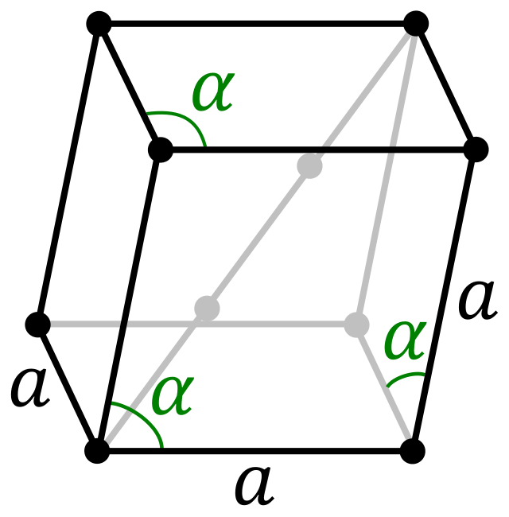
图 4：三方晶系宏观图。作者：Officer781 / Wikimedia Commons (CC BY-SA 3.0)
3.5 正交晶系（斜方晶系）
属于低级晶族，无高次轴。其特征是三个互相垂直的二次轴，或包含两个互相垂直的对称面（涵盖点群222、mm2、mmm）。因此三个结晶轴互相垂直但长度互不相等：a ≠ b ≠ c, α = β = γ = 90°。属于正交晶系的矿物有硫磺、重晶石、橄榄石，晶形常呈柱状或板状。
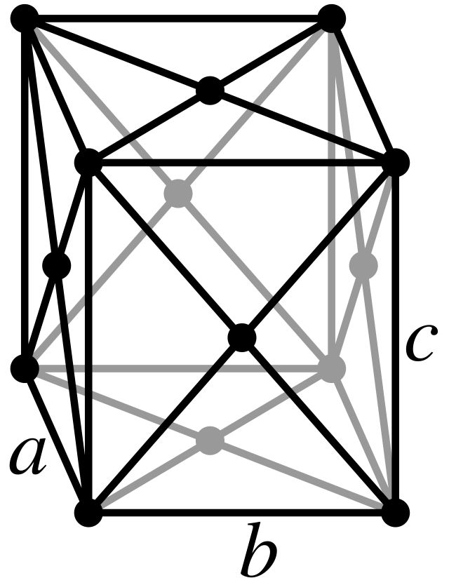
图 5：正交晶系宏观图。作者：Stannered / Wikimedia Commons (CC BY-SA 3.0)
3.6 单斜晶系
低级晶族，对称性较低。特征对称元素是一个二次轴或一个对称面。晶胞的三个轴长互不相等，且有一个夹角（通常设定为β）不等于90°，另外两个夹角为直角：a ≠ b ≠ c, α = γ = 90°, β ≠ 90°（多数矿物中β > 90°，但理论值可大于或小于90°）。石膏、正长石、锂辉石都是单斜晶系。这类晶体常见板状或柱状，解理发育。
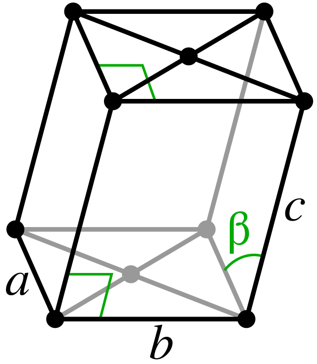
图 6：单斜晶系宏观图。作者：Stannered / Wikimedia Commons (CC BY-SA 3.0)
3.7 三斜晶系
对称性最低的晶系，可能仅具有反演中心（-1）或无其他任何对称元素（点群1）。三个轴长均不相等，三个夹角也均不相等，且通常不等于90°（但由于对称性限制，角度可偶然等于90°，但无物理对称性要求）：a ≠ b ≠ c, α ≠ β ≠ γ，且通常不为90°。属于三斜晶系的矿物如微斜长石、蔷薇辉石、钠长石。晶体形态往往呈板状或不规则状，通常晶面较多但发育不均衡。
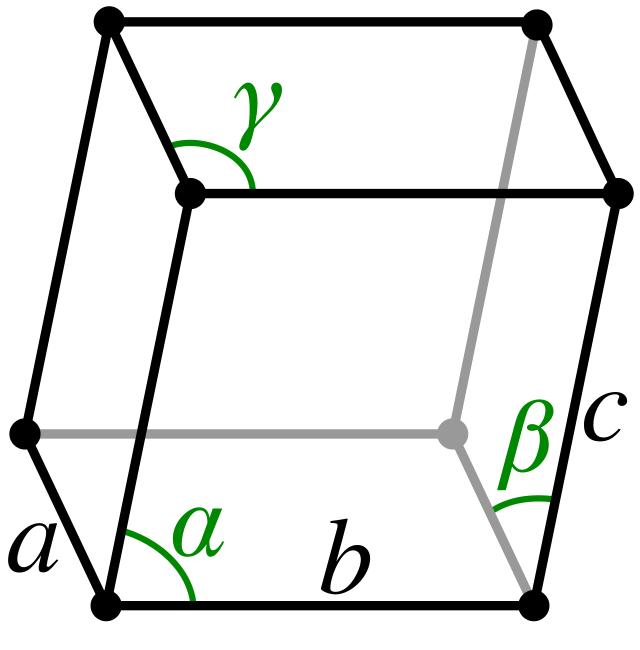
图 7：三斜晶系宏观图。作者：Stannered / Wikimedia Commons (CC BY-SA 3.0)
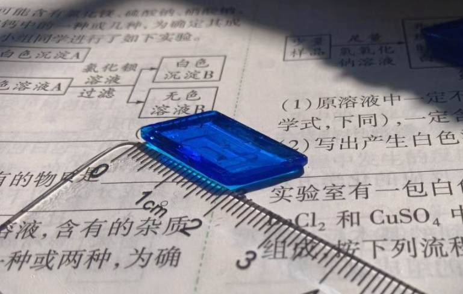
实例：硫酸铜晶体。作者：迷路的野指针
四、布拉菲点阵——14种空间排列
1848年，法国晶体学家布拉菲（A. Bravais）证明，在三维空间中，所有晶体结构的点阵类型按照“每个阵点具有相同的周围环境”这一要求来划分，总共只有14种。这14种点阵被称为布拉菲点阵（Bravais Lattices），它们分属于七大晶系。
根据在晶胞的体心、面心或底心是否有附加阵点，同一晶系可派生出多种点阵形式。具体分类如下表：
| 晶系 | 布拉菲点阵类型 | 晶胞参数特征 |
|---|---|---|
| 三斜晶系 | 简单三斜 (P) | a≠b≠c, α≠β≠γ≠90° |
| 单斜晶系 | 简单单斜 (P) | a≠b≠c, α=γ=90°, β≠90° |
| 底心单斜 (C) | 同单斜参数 | |
| 正交晶系 | 简单正交 (P) | a≠b≠c, α=β=γ=90° |
| 体心正交 (I) | 同正交参数 | |
| 面心正交 (F) | 同正交参数 | |
| 底心正交 (C 或 A) | 同正交参数 | |
| 四方晶系 | 简单四方 (P) | a=b≠c, α=β=γ=90° |
| 体心四方 (I) | 同四方参数 | |
| 六方晶系 | 简单六方 (P) | a=b≠c, α=β=90°, γ=120° |
| 三方晶系 | 菱面体点阵 (R) | a=b=c, α=β=γ≠90°（菱面体坐标） |
| 立方晶系 | 简单立方 (P) | a=b=c, α=β=γ=90° |
| 体心立方 (I) | 同立方参数 | |
| 面心立方 (F) | 同立方参数 |
说明：三方晶系的R点阵常用六方晶胞表示，但布拉菲点阵中仍独立列为R，并非“H心”。底心单斜/正交的C心指在(001)面心附加阵点。以上共计14种。
14种布拉菲点阵是理解晶体结构的基础，后续的230种空间群即由这14种点阵与32种晶体学点群组合派生而来。
五、总结与进阶
在实际晶体培养中，我们可以根据溶液环境和晶体所属晶系，调整过饱和度、温度梯度等参数，从而获得理想晶形。例如，属于单斜晶系的硫酸铜在自然蒸发时常呈短柱状或板状；而属于四方晶系的磷酸二氢钾则易于沿c轴生长，形成长柱状晶体。因此，熟悉晶系理论，是从“偶然得到晶体”迈向“设计晶体形态”的重要一步。
附录：晶体培养常见化合物颜色参考
在了解了晶体的对称美学后，晶体的“色彩美”同样是晶体培养的一大乐趣。不同的过渡金属离子或配合物在结晶时会展现出绚丽的色彩。下表整理了常见无机化合物的结晶颜色，可作为你在设计和培养晶体时的重要参考工具：
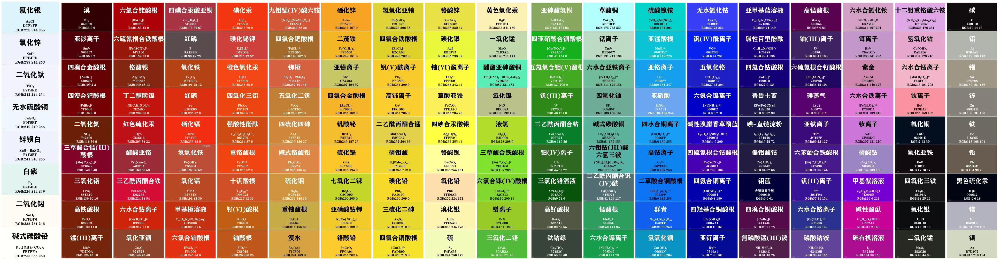
附图：化合物颜色表
参考资料
- [1] 周公度, 段连运. (2017). 结构化学基础 (第5版). 北京大学出版社.
- [2] 钱逸泰. (2005). 结晶化学导论 (第3版). 中国科学技术大学出版社.
- [3] Hahn, T. (Ed.). (2005). International Tables for Crystallography, Volume A: Space-group symmetry (5th corrected reprint). Springer.
- [4] Sands, D. E. (1993). Introduction to Crystallography. Dover Publications.
- [5] Kittel, C. (2004). Introduction to Solid State Physics (8th ed.). John Wiley & Sons.